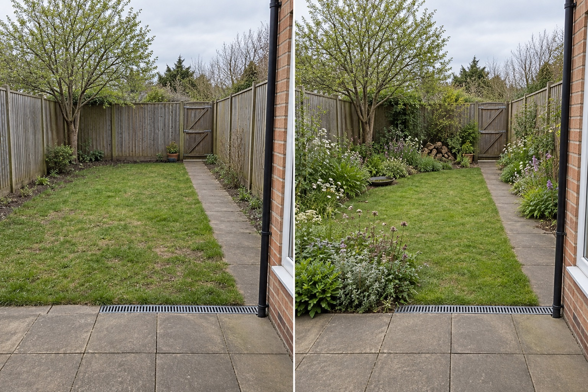

Join the planted edges
Use a continuous or stepping sequence of planted zones around the boundary instead of scattering tiny isolated beds through the lawn.
A wildlife-friendly layout starts by reading the garden as connected zones: existing cover, a planted edge, a quiet refuge and a suitable water source. Keep the main path, gate, drain and everyday-use area clear, then verify plants and habitat features for the species and conditions where you live.
Editorially reviewed September 8, 2026.
This AI-generated comparison is visual inspiration, not a habitat survey, planting prescription, species-safety assessment, drainage plan, construction detail, certification claim or guarantee that wildlife will visit.

Use a continuous or stepping sequence of planted zones around the boundary instead of scattering tiny isolated beds through the lawn.
Place a log, leaf or dense-cover zone away from the door, main path and frequently disturbed sitting area.
Retain a clear route between the house and gate, keep the drain visible and leave an open area that can still support daily use.
The National Wildlife Federation describes food, water, cover and places to raise young as basic habitat elements. The Royal Horticultural Society recommends thinking of a garden as a series of micro-habitats and notes the value of living boundaries and layered planting. These principles do not identify which species, plants or features are appropriate at your address; use local ecological and horticultural guidance for that decision.
The house edge, patio, channel drain, narrow path, rear gate, timber boundaries, mature tree, ground level, camera position and central usable lawn remain unchanged. The concept does not assume permission to alter a boundary or disturb tree roots.
Record existing plants, seasonal shade, wet and dry areas, regular visitors and how people move through the space. A single photo cannot reveal these patterns.
Check native status, invasiveness, mature size, toxicity, soil and moisture needs with authoritative local sources. Do not identify or select plants from this image.
Confirm cleaning, refill, overflow, child and pet safety, mosquito management and an exit route for wildlife before adding any container or pond.
Keep drains, gates, fences, utilities and tree-root zones accessible. Leave enough working room to manage planting without blocking the route.
Avoid buying generic “wildlife” products before understanding local species, filling every open area, hiding drains, placing refuge material beside the busiest route, or treating an AI image as evidence of ecological benefit. More visual complexity is not the same as a better habitat.
Stop before excavating, changing drainage, attaching anything to a boundary, disturbing established roots, introducing a species, or adding standing water that you cannot maintain safely. Seek appropriate local advice when protected species, invasive species, contaminated soil, unstable ground, utilities or water-management rules may apply.
No. Clear paths, defined edges and one deliberately quieter zone can make the layout readable while leaving habitat features less disturbed.
No. This concept retains an open central area and tests denser edges. The right balance depends on how you use the garden and which locally appropriate habitat goals you choose.
Not automatically. Water can be useful, but its position, depth, escape routes, hygiene, overflow and safety require real-site decisions. A maintained shallow container may be a smaller test where appropriate.
Use trusted local plant and wildlife sources to check suitability, mature size, invasiveness and safety. The AI image suggests layers and coverage only; it does not identify or recommend species.
Upload a level, wide photo to explore connected zones while retaining access, drainage and recognizable fixed features.
AI-generated visualizations are concepts. Check local conditions and consult suitable local experts before construction, planting or habitat work.